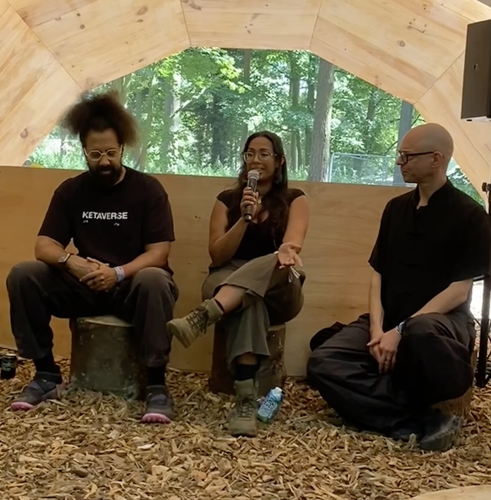

As a researcher I often find myself reflecting on the legacy of my work: What is my responsibility for the knowledge I produce? Where will the outputs of my research end up? Who will be able to access and engage with it, and to what end? These questions motivate me to keep the inclusivity, accessibility, and impact of my research at the front of my mind and practice.
I believe that us researchers must make an effort to advance our work beyond the laboratories, the elite institutions and the academic conventions that our work is often made to live and also often die in. Why pursue knowledge if it cannot be distributed among the masses? Such musings have led me to incorporate approaches including open science and decolonial analysis into my practice. They've also pushed me to participate in public engagement efforts, from speaking about the science of music and art at music festivals including Houghton (2024) and Lost Village (2022) to volunteering in music-based care activities for local residents of East London living with dementia at St. Joseph's Hospice. Experiences with music outside of the lab, especially those which are grounded in community, care and shared experience, have fundamentally shaped my perspective on the work I do.
Throughout my years studying music and autobiographical memory, I noticed that nearly all of the research about music and memory focuses on Western populationsOften referred to as the "WEIRD" problem: samples are largely Western, Educated, Industrialised, Rich and Democratic and Western musical genres. This is a massive problem as it limits the scientific community's ability to draw conclusions about music's relationship with memory for populations that aren't Western which happens to be the majority of the world! . It also reinforces epistemic exclusion, the silencing and displacement of local/indigenous knowledge - for example, knowledge which is embedded in cultural traditions like music - and epistemological violence, which constructs the "Other" (in this case, non-Western populations) as non-representative or general exceptions to a rule.
This is a trend throughout research in music psychology, and in psychological and scientific disciplines more broadly, so I wanted to attempt to move some of the research into a more equitable and representative direction. This led to the conception of Memory Records, a citizen science public engagement project designed to promote global, active participation in music-memory research.
Currently populated with data from my first PhD study which samples memories participants have associated with specific songs from their reminiscence bumpsthe years of childhood to early adulthood, where we tend to concentrate memories and music preferences and beyond, Memory Records establishes the first living musical memory archive of its kind. You can already have a look and sort through some of the memories there, see the patterns, and begin to think about how music has shaped your own life story. With friends and collaborators I am working towards making this an active open data collection tool and a meaningful archive, with the aim to encourage participation globally, so that we can better understand music's role in memory across cultures and traditions. All you'll need to be a part of this is an internet connection and 5 minutes MAX of your time. Sign up here to be notified when the full site is live; I look forward to reading your memories there in the near future...
If you have any questions, my door is open for collaborations, partnerships, consulting opportunities and speaking engagements. I am an experienced public speaker, with 20+ concerts that I've MC'd, multiple international conference presentations, and even a weddingNot a joke! I officiated my brother's wedding in 2023. It was amazing. under the belt. Get in touch!
Below are repositories for (1) a dataset of music-evoked autobiographical memories and the associated auditory features of the memory evoking music and (2) Unity resources for the virtual reality music-supported episodic memory encoding paradigm developed for my PhD research.
Unity project build by Ju Zhang
Below you can view some of the oral and poster presentations I've delivered about Memory Records and doctoral research using virtual reality, experience sampling and survey studies.